INTRODUCTION - PASSENGER COMPARTMENT FRONT SIDE DOORS
- Path
- Descriptions > 70 FITTINGS > 7005 PASSENGER COMPARTMENT FRONT SIDE DOORS > INTRODUCTION - PASSENGER COMPARTMENT FRONT SIDE DOORS
- Kind
- system description
- Applies to
- all engines; all production periods
- Interactive page
- https://sloeber94.github.io/elrnDB-fCrm/en/#/194001941
Applies to: all engines; all production periods
SPECIFICATIONS
The front doors have been designed with a structure and panels that feature no sharp corners thereby keeping the risk of possible injury to the occupants to a minimum.
The locks and control linkage are protected against break ins by a shield that prevents access to the mechanisms from the outside.
The safety closure from the inside of the vehicle is activated by a special button on the centre tunnel at the height of the trim on the gearbox.
The side panel features the armrest, directly in the panel and an oddments pocket in the lower part. The layout of the functional elements of the panel has been designed to allow the correct interaction with the body of the occupant in the case of a side impact.
They are smooth and soft at the top, whilst the projection of the armrest is rendered harmless by the fact that it collapses at a load level well below that which would risk injury to the organs in the abdomen. The door also features a carrier which, in addition to carrying out a support function for the electric window motor, the guides and the various cables, is integrated with the actual door with a structural function.
The door also contains:
- opening/closing handle;
- exterior side mirror
- side rubbing strips (Opt only)
The panel also includes:
- two speakers, one housed in the door mirror trim;
- LED signalling locking of locks, dead lock function and deterrance (driver's side only);
- puddle light;
- oddments pocket;
- door interior opening lever;
- electric controls for windows and exclusion button for rear windows (driver's side only);
- controls for adjusting door mirrors (driver's side only);
The sliding window is made from heat-proof, tempered glass and is moved by a guided cable type window opening device.
The seal on the upper profile of the door, by the glass, and the glass scraper trims guarantee an excellent aerodyanmic seal.
COMPOSITION
Exploded view of the front door
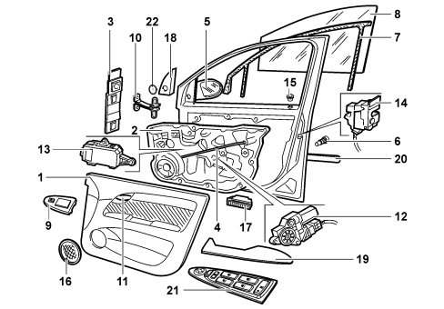
1 - Interior door panel
2 - Carrier
3 - Window opening guide
4 - Bowden cable
5 - Rear view mirror
6 - Door lock pawl
7 - Window opening seal
8 - Glass
9 - Passenger side door control panel
10 - Check strap
11 - Door opening interior handle
12 - Electric window motor
13 - Door node
14 - Lock
15 - LED
16 - Speaker
17 - Puddle light
18 - Interior mirror trim
19 - Armrest
20 - Side rubbing strips (Opt only)
21 - Driver's door control panel
22 - Tweteer
7005M FRONT DOOR ELECTRIC WINDOWS
Driver's door control panel
Composition
The driver's door control panel houses the following controls.
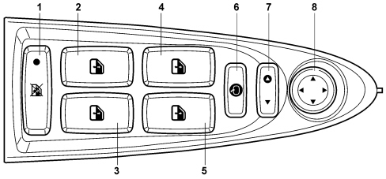
1 - Rear windows deactivation button
2 - Left rear electric window control button
3 - Right rear electric window control button
4 - Left front electric window control button
5 - Right front electric window control button
6 - Mirror folding button
7 - Electric mirrors selector driver's side L (left), passenger side R (right)
8 - Electric mirrors positioning knob
The driver's side door control panel connector is illustrated in the diagram below.
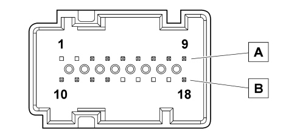
A - Connector A
B - Connector B
Connector A/B pin out (9 + 9 pins)
PIN | FUNCTION |
|---|---|
1 | N.C. |
2 | N.C. |
3 | Ideogram dimmed lighting positive control |
4 | Front passenger electric window control signal |
5 | Front driver's electric window control signal |
6 | Earth |
7 | Mirror deflector control (right/left) |
8 | Mirror selector control (driver's/passenger side) |
9 | Mirror deflector control (UP/DOWN) |
10 | Rear electric windows inhibition negative signal |
11 | Rear electric windows locked signal LED positive control |
12 | Left rear electric window control signal |
13 | Right rear electric window control signal |
14 | N.C. |
15 | N.C. |
16 | N.C. |
17 | N.C. |
18 | Mirror folding control signal (right/left) |
Operation
The driver's door control panel sends the signals for the operation of the actual door to the NPG control unit which manages and carries out the functions described later on.
For checks relating to the control unit pin out,
See descriptions 5505A MULTI-FUNCTION COMPONENTS
Passenger door electric window control
The electric windows control on the passenger door is described below.
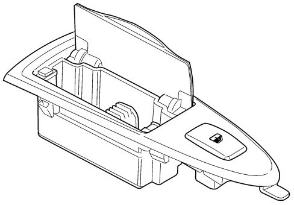
Operation
The driver's door control panel sends the signalsfor the electric window function for the actual door to the NPP control unit which manages and carries out the function described later on.
For checks relating to the control unit pin out,
See descriptions 5505A MULTI-FUNCTION COMPONENTS
Front electric windows
The electric window controls for both the front doors and the rear doors are managed on the driver's front door.
The other doors control their own window opening mechanism directly.
After a key off, the front windows can be operated either manually or automatically for a period of 2 minutes. When this timed period elapses the system no longer acquires new commands.
The NPG node acquires the electric window commands for both the driver's front door and the passenger door. In addition, it directly controls its own electric window motor and transmits the commands to the NPP via the CAN
The NPP node only acquires the commands for the front passenger door and controls its own motor directly.
The driver and passenger side door motors are therefore controlled both manually and automatically in accordance with the following strategy:
- manual mode refers to the starting and stopping of the window determined manually by the user by pressing the control button for: Ta = activation time > 50 ms and < 300 ms (brief command); when the latter is released, the motor stops;
- automatic mode refers to the starting of the window determined manually by the user by pressing the control button for: Ta = activation time > 300 ms (long control).
With the node enabled, the electric window should not work when the control buttons are pressed for less than 50 ms.
The node should interrupt the operation of the window in the following cases:
- when automatic movement is in progress and either the up or down control is pressed;
- in the top or bottom end of travel position during either manual movement (in a time of 400ms ± 50ms) or automatic movement (in a time of 300ms +/- 30ms).
This is adjusted exclusively through the control for the motor current which is the self-adaptive type.
The current self-adaptation means that the control should result in the request to close or open the vehicle windows being successful in conditions that range from a force of 6 - 8 Kg to forces that even reach 16 -18 Kg, in all voltage range (10 -16 V) and temperature (-30°C ÷ 75°C) conditions overcoming non critical conditions.
Operating conditions
The electric window function should only be activated with the ignitino on (+ 15V) except for the central closing/opening of the windows using the remote control and in the timed period without the key described later on.
During the starting stage, any movement of the windows in progress is interrupted and does not continue until the starting is over. The downwards movement of the window during starting does not have to be stopped (but continues until the lower end of travel position) if the NPG and NPP door nodes detect that the movement is due to the intervention of the anti-crush safety system.
After a key off, the front windows can be operated either manually or automatically for a period of 2 minutes ± 1sec. managed by the door nodes. . When this period has elapsed, the node no longer acquires new commands, but brings any received before the 2 minute period to a conclusion.
If, during the timed period, the door nodes detect the opening of one of the doors, the nodes no longer acquire new commands, but bring any received before the opening of the door to a conclusion.
If one of the doors is already open at the key off, the door node brings any commands received before the opening of the door to a conclusion.
In the case of commands given simultaneously on the driver's and passenger sides, the passenger window movement logic is as follows:
Command from driver's side | Command from passenger side | Passenger side front window movement |
|---|---|---|
Up | Up | Up |
Up | Down | No Movement |
Down | Up | Down |
Down | Down | Down |
Central closing/opening of windows activated
Central window closing
This function makes it possible to completely close the windows in a single operation.
The central closing functino using the remote control (signals managed by NBC) is only activated in the following circumstances:
- Key - OFF;
- Windows initialized;
- Anti-crush safety protection activated.
The central closing of the windows can only be carried out by means of a specific signal sent from the NBC via the CAN. This command is acquired directly by the NPG and the NPP which implement the movement of the respective windows.
Central window opening
This function makes it possible to completely open the windows in a single operation.
The central opening functino using the remote control (signals managed by NBC) is only activated at the Key-off.
The central opening of the windows can only be carried out by means of a specific signal sent from the NBC via the CAN. This command is acquired directly by the NPG and the NPP which implement the movement of the respective windows.
The central closing/opening of the windows cannot be activated simultaneously for 4 windows.
For this reason the movement follows the logic described below:
Left rear electric window | Operation delayed by 30 ms in relation to the command |
Right rear electric window | Operation delayed by 60 ms in relation to the command |
Left front electric window | Operation delayed by 90 ms in relation to the command |
Right front electric window | Operation delayed by 120 ms in relation to the command |
Anti-crush safey function
There is an anti-crush safety sensor fitted to the electric window motor which guarantees the reversal of the electric window motor each time an obstacle (e.g. finger, hand, etc.) comes between the window and the actual seal, thereby preventing it from being accidentally crushed.
This function confers a high level of safety on the model especially in there are any children on board who activate the windows accidentally.
The anti-crush safety function is activated during both manual and automatic operation.
There are two "inversion zones" and "non inversion zones" for the anti-crush safety system:ns
- the "inversion zone" corresponds to the space between 200 mm from the upper edge and the upper edge itself;
- the "non inversion zone" corresponds to the remaining space.
If the NPG and NPP detect the presence of an obstacle in the "inversion zone" whilst the window is moving upwards, they should interrupt the upwards movement and reverse it immediately in a total time of < 30ms.
The reversal of the window should reach a position corresponding to an opening of at least 200 mm from the upper edge or at least 50 mm higher than the initial starting position of the window.
During the entire inversion time the NPG and NPP do not accept any type of rasing or lowering command.
If the NPG and NPP detect the presence of an obstacle in the "non inversion zone" they should only interrupt the upwards movement of the window.
Override function management
If the anti-crush safety function intervenes five consecutive times within a minute, the NPG and NPP should inhibit the automatic closing operation of the window (the opening operation continues to be present automatically) only allowing it in steps of 7 cm ± 1cm with the control button having to be released for the next manoeuvre (degraded window closing mode).
In order to restore the correct operation of the system, one of the following operations must be performed:
- key off operation followed by a key on;
- a downwards movement of the window in question made by the user.
Anti-crush safety system initialization procedure
If the system has not been initialized, the NPG and NPP respectively:
- do not allow the automatic closing of the window (the opening continues to be present automatically), but only in manual mode;
- do not allow the central opening/closing.
The initialization of the anti-crush safety system is designed for the NPG and NPP to learn the window position parameters along the entire travel.
The initialization procedure must be carried out:
- the first time at the end of the line at the factory;
- after each time the battery is disconnected.
To initialize the anti-crush safety system, proceed as follows:
- place the window to be initialized in the lower end of travel position (manually or automatically);
- raise the window in manual mode until it is in the top end of travel position (without interruptions) using the UP button;
- once the upper end of travel position has been reached, continue to operate the UP control for at least 1 sec.
After having initialized the system the NPG and NPP will allow both the automatic upwards movement of the window and the central opening/closing.
Management of anti-crush safety system failure
If the NPG and NPP detect a failure in the anti-crush safety system (for example they do not receive the position signal from the sensors) they must inhibit the upwards movement of the window in automatic mode only allowing it in "degraded mode".
If, during the manual or automatic upwards movement of the window, the anti-crush safety system failure condition occurs, the NPG and NPP should stop the window immediately.
Safety functions in the case of a malfunction
If there is a system malfunction, the door node should activate the following procedures:
- If the motor power supply outlet wiring is broken, the control unit de-energizes the relays in a maximum of 500ms in the following two cases: on activation (upwards or downwards) because no current is detected; during the upwards movement, because a current below 0.8 A is detected.
- If at the key on (ignition key inserted and turned ON), in the presence of a fault at the control buttons (short circuit of buttons remain pressed), the operation of the control is inhibited until the defect disappears (or the button is released) for a period of > 60 ms.
- If the buttons are pressed for longer than 12 seconds, the operation of the motor is inhibited;
- If the down button is short circuited or pressed for more than 30 seconds, the command is inhibited to be able to close the window.
Puddle lights management
When the front doors are opened a negative (earth) signal is sent from the microswitches in the driver's side and passenger side lock geared motor to the Body Computer (NBC) which wakes up the CAN and notifies the driver's door (NPG) and passenger door (NPP) nodes of the door status.
These control the switching on of the various bulbs in the lower part of the doors.
The function is activated both with the ignition device inserted and turned to ON (key on) or not inserted or turned OFF (key off).
Opening one of the doors causes the lights to come on for a maximum period of 3 minutes. When this timed period expires it will only be possible to reactivate the puddle lights after one of the doors has been reopened once again.
Closing both doors causes the lights to go out immediately.
7005N FRONT DOOR CENTRAL LOCKING SYSTEM
Central locking system
Introduction
The central locking system manages the door and boot locks in order to protect the passenger compartment against entry by unauthorized persons.
The door unlocking/locking management strategy is carried out by the NBC, whilst the NPP NPG and NVB nodes activate the motors for the locks in accordance with the commands transmitted via the CAN from the NBC.
The fuel flap is managed directly by the NPG and is therefore connected to the locked/unlocked status of the driver's door.
The recognition component for the central locking system is the T.E.G. (Transmitter for Entry and Go).
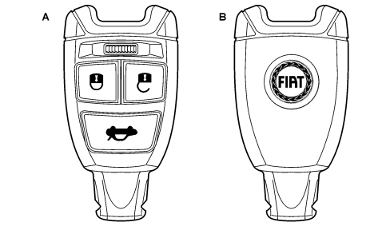
A - Front view
B - Rear view
The T.E.G. has a special insert that be extracted manually in order to be able to lock/unlock the front and rear doors.
For the front doors the locking function is carried out at the mechanical back-up pawl located under the exterior handle, whilst the unlocking function is carried out directly at the lock (side part of the door). For the rear door, on the other hand, the door locking function is carried out at the lock; the unlocking function is not permitted.
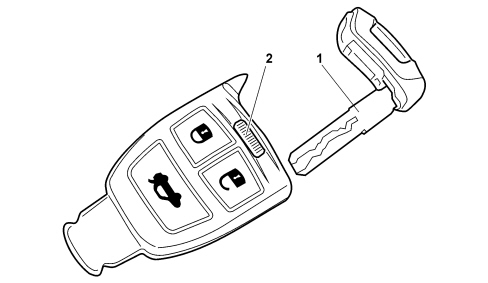
1 - Emergency key (back-up)
2 - Key release lever
The mechanical insert in the T.E.G. makes it possible to control the locking/unlocking of the doors from outside the passenger compartment using the pawls and locks.
The pawls in the driver's and passenger doors make it possible to unlock the door concerned only.
The vehicle exterior handles allow access to the passenger compartment from the outside to the door unlocked only.
The interior handles, on the other hand, make it possible to leave the passenger compartment, with the dead lock not engaged, with the door either locked or unlocked.
The boot can be opened by using the boot handle and the electrical contact.
The central locking system includes a dead lock function. This function makes it possible to mechanically disconnect the interior door opening handles and the safety knob, so that it is not possible to open the door from the inside after having broken the glass (greater protection against theft).
The instrument panel or, on top of the range versions, the NIT info telematic node, are used for personalizing the operation options (user settings): for example, the unlocking of the driver's door or the boot independently.
There are 2 buttons (mono stable buttons) in the control panel on the tunnel (PCT) that allow the central locking and unlocking of all the doors.
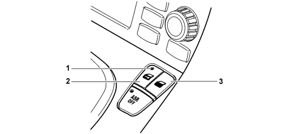
1 - LED signalling doors locked (amber yellow)
2 - Door locking button
3 - Door unlocking button
There is an amber yellow LED in this control panel on the central locking button. If it is on this signals that all the doors are closed whilst if it is off this indicates that at least one of the doors is unlocked.
The red deterrent LEd is located on the driver's door panel.
Management of central locking from outside the vehicle
Central locking system with radiofrequency remote control
The T.E.G. has a radiofrequency remote control function that allows the remote control (minimum range 20 m) of the door locking/unlocking operations or the release of the boot.
The T.E.G. has 3 buttons that allow the operation of the central locking system: one button for unlocking the doors, one for locking the doors and one for releasing the boot.
Each transmitter contains a secret code that identifies it unequivocably.
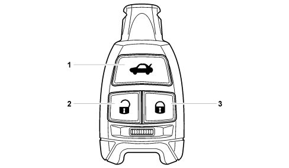
1 - Boot release button
2 - Door unlocking button
3 - Door locking button
Using the T.E.G. as a radiofrequency remote control it is possible through the instrument panel or, on top of the range versions, through the NIT info telematic node, to personalize the operating options (user settings).
The direction indicators and the red LED in the door panel are used to signal that the command has been received and/or to signal that a manoeuvre has not been carried out by the system (the signals are activated according to the market).
As stated previously, the transmitter has 3 buttons, each of which has a specific function described in the table below.
Button/Function | Single press | Double press | Long press | End of long press |
|---|---|---|---|---|
Locking button (with all the doors closed) | - Door locking - Boot locking - Courtesy light switching off - Red LED in door and blinker on - Switching on of alarm (if present) | - Switching on of dead-lock function - Red LED in door and blinker flashing | - Window closing | - Window closing interruption |
Unlocking button | - Driver's door unlocking (*). - Boot release (*). - Switching off of dead-lock function. - Switching on of courtesy lights. - Red LED in door and blinker off. - Switching off of alarm (if present). | - Unlocking of all the doors (*). | - Window opening. | - Window opening interruption. |
Boot button | - Boot release. - Blinker flashing. | - | - | - |
(*): previous set-up using NQS/NIT.
The button pressing modes are as follows:
- single press: the control component is pressed once;
- double press: the control component is pressed twice within 1 second. The double press takes place if a control component is pressed within 1 second of having been released;
- long press: the control component is kept pressed continuously for more than 2 seconds;
- end of long press: the long action is interrupted the moment the control component is released.
Locking the doors
When the locking button is pressed, the locks are locked centrally.
The normal door locking signals are supplemented by the flashing of the direction indicators for 1 sec. and the LED in the driver's door panel coming on for 3 secs. followed by the deterrent state, in order to signal that the remote command has been received.
If the button is pressed with the vehicle already locked, the manoeuvre and the signalling are still carried out.
If one or more of the doors has not been properly shut, the locking command is inhibited and the direction indicators flash at 3 Hz (30% duty-cycle) for 3 seconds: this warns the user to make sure the doors are properly shut.
If only the boot is not properly shut, the locking command is carried out and the direction indicators flash at 3 Hz (30% duty-cycle) for 3 seconds followed by the deterrent state: this warns the user to make sure the boot is properly shut.
Unlocking the doors
When the unlocking button is pressed all the doors are unlocked.
The normal door unlocking signals are supplemented by two flashes (0.5 secs.) of the direction indicators and the red LED in the driver's door panel going out to signal that the remote command has been received.
If the button is pressed with the vehicle already unlocked, the manoeuvre and the signalling are still carried out.
Independent driver's door unlocking
If the "independent driver's door unlocking" setting is activated, when the unlocking button is pressed only the driver's door is unlocked whilst all the other doors remain locked preventing access by unauthorized persons: it is then possible to unlock the other doors as well by pressing the unlocking button a second time within 1 second of pressing it the first time.
Dead lock function
The dead-lock function is engaged using the remote control the moment the doors are locked by pressing the button a second time within 1 second of pressing it the first time.
The engagement of the dead-lock is therefore a voluntary action.
The normal dead locking signalling is supplemented by two flashes lasting 0.5 seconds of the direction indicators and the red LED in the door panel.
Opening boot/tailgate
There is a third button on the remote control which, if pressed once, allows the release of the boot: the latter is unlocked and released, being slightly raised.
The operation is signalled by the direction indicators flashing twice.
When the boot is closed again it returns to the state prior to the opening only signalling the locking if there is a surveillance alarm.
Auxiliary functions
All the door windows can be closed at the time the doors are closed by keeping the locking button pressed for at least 2 seconds: at this point the windows start to move and continue as long as the button is pressed.
In the same way, all the door windows can be opened at the time the doors are unlocked by keeping the unlocking button pressed for at least 2 seconds: at this point the windows start to move and continue as long as the button is pressed.
Central locking system from inside the vehicle
Buttons for central locking and unlocking of the locks
There are 2 buttons (mono stable buttons) in the control panel on the tunnel (PCT) that allow the central locking and unlocking of all the doors.
When the locking button is pressed all the locking are locked (including the boot). If one or more of the doors is open, the command is inhibited.
Pressing the unlocking button unlocks all the locks. If the doors have been locked using the remote control, pressing the unlocking button does not produce any request and the button is disabled.
The button must be re-enabled after an unlocking command coming from the remote control and/or FIS (inertia switch).
1 - LED signalling doors locked (amber yellow)
2 - Door locking button
3 - Door unlocking button
The LED in the locking button behaves as follows:
Action | LED status |
|---|---|
Locking using interior button | - All doors closed: ON - One or more doors open: OFF (the command is not carried out) |
Door locking at 20 Km/h | ON |
Door unlocking command | OFF |
Unlocking by inertia switch | OFF |
The LED goes out:
- when any of the doors is opened;
- when the timed period of 2 minutes expires (only in key off conditions);
- when any unlocking command is given.
The door status signalling LED is independent of the boot status.
The LED is operated by the NBC which also manages the timed delay at the key off.
The behaviour of the door status LED will always follow the instructions of the last command received.
In the key off status, the LED should go out after a period of 2 minutes. Each time the central door locking button is pressed at the key off, the door status LED should always come on (or remain on) for a timed delay of 2 minutes after the button is pressed.
If there is a move from a key off status to a key on status, the LED should signal the correct status of the doors. Therefore if all the doors are locked at the key on, it should come on or remain off if at least one of the doors is unlocked.
Unlocking the locks from the inside
Using any of the door handles from the inside, the lock for the door in question should be unlocked and the door opened.
To unlock the locks only, use the central unlocking button on the PCT.
If the interior handle of one of the doors is pulled when it is opened, the central unlocking of the locks is always commanded.
If the "independent driver's door unlocking" setting is activated, pulling the driver's door handle when it is opened, will unlock the driver's door only whilst the other doors will remain locked.
The following mechanical back-ups exist for this situation:
- mechanical connection at the exterior handles with the door unlocked (for emergency access from the outside);
- mechanical connection at the interior handles with built-in safety unlocking (for leaving the passenger compartment in an emergency);
- mechanical unlocking of the driver's/passenger door lock using the pawl with a mechanical insert (for access from the driver's door with the vehicle locked).
Central locking system with emergency insert (back-up)
Locking the doors
The front and rear door locks can be locked individually using the mechanical back-up in the respective locks by inserting the T.E.G. emergency insert and turning it anti-clockwise until it is in the position illustrated in the diagram.
The locking of the front and rear doors is exclusively mechanical by nature.
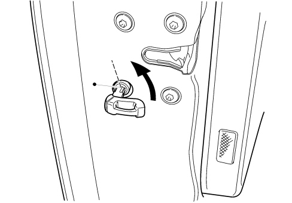
Unlocking the doors
The front door locks can be unlocked individually by proceeding as follows:
- insert the T.E.G. emergency insert in the pawl (driver's or passenger door);
- turn the insert towards the rear of the vehicle (1) until the lock is heard to click;
- return the insert to a vertical position (2) and extract it from the pawl;
- lift up the handle (3).
The unlocking of the front doors is exclusively mechanical by nature.
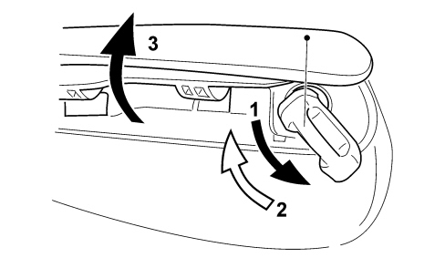
Replacing the t.e.g. battery
To replace the T.E.G. battery, proceed as follows:
- move the retaining lever (1) sideways and extract the emergency metal insert (2);
- extract the battery holder compartment (3) using the emergency metal insert and replace the battery (3) pushing it sideways, taking care not to reverse the polarity;
- refit the battery holder compartment (3) and the emergency metal insert (2) inside the T.E.G.
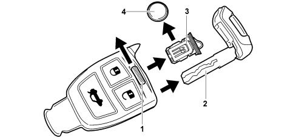
Child safety
The vehicle has a mechanism on both rear doors that makes it possible to switch the child locks on/off mechanically.
With the child-proof locks on the rear doors cannot be opened from inside the passenger compartment using the interior handles.
These doors can only be opened from the outside if the door is unlocked.
The child-proof locks on/off status is not signalled.
The procedure for switching the child-proof locks on is described below:
- insert the T.E.G. emergency insert in the special pawl located on the inside of the door (vertical position A);
- turn the key and position it horizontally (B);
- extract the key and close the door concerned.
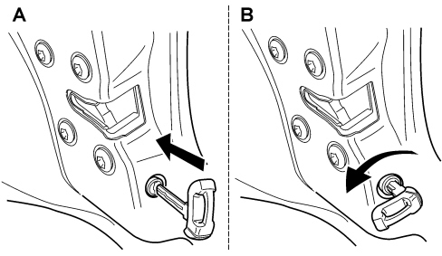
A - Device switched on (door can be opened from the inside);
B - Device switched off (door locked).
The device remains on even if the doors/boot are unlocked electrically using the remote control.
Unlocking the doors through the f.i.s. signal
The F.I.S. (inertia switch) sensor status is acquired directly from the NBC, therefore the latter controls the unlocking of the doors in accordance with the strategy described previously.
The NBC replicates the lock unlocking command, for a second time 1 sec., after the command sent previously.
The signal coming from the FIS sensor only causes the boot to be unlocked if the boot is subject to the doors. If the boot is set to "always locked", the signal from the inertia switch will not have any effect.
Signalling led
There is a high efficiency red LED on the vehicle (which is clearly visible from the outside in all light conditions) located in the driver's door panel.
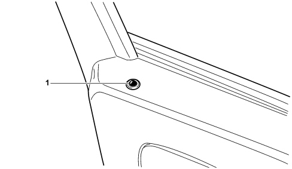
1 - LED
The LED signals the following conditions:
- locking of the locks: the LED lights up for 3 seconds. If some of the doors or the boot are not properly shut at the time when the locks are locked, the LED flashes at 3 Hz (30% duty-cycle) for 3 seconds.
- switching on of dead-lock function: after the dead lock has been switched on, the LED flashes twice for 0.5 seconds. At the end of this dual flashing, the LED remains on constantly until three seconds have elapsed and then moves on to deterrence signalling.
- deterrence: once the door lock signal has been issued, the LED flashes at 0.8 Hz (5% duty-cycle) to indicate that the vehicle is locked (dissuasion function): the flashing ends when the locks are later unlocked.
The deterrence signalling is only activated if a door locking command has been successful.
Specific functions of the central locking system
Logic alignment after mechanical unlocking at key on and key off
With the vehicle locked, pulling the interior handle produces the mechanical unlocking of the door involved, local to the individual door (not detected by the system).
The NBC having detected the transition of the door from closed to open, alters the logic status transmitted on the network and may or may not command the unlocking of the doors, in particular:
- opening via the rear handle: the status of the door involved is aligned;
- opening via the driver's handle: according to the vehicle set-up, the unlocking of the doors is commanded;
- opening via the passenger handle: the central unlocking is commanded.
In the last two cases the boot is also unlocked (if it has not been set in an independent mode).
Automatic locking
It is possible, using the NQS/NIT set-up menu, to enable or disable the automatic locking of the doors when a pre-set speed is exceeded.
If the function is enabled, the NBC compares the vehicle speed with the level of 20 Km/h and requests the locking of the doors when this speed is exceeded. The doors are only locked after all the doors are closed and after the first time the level of 20 Km/h is exceeded.
If the doors are locked by this function, the user can unlock the doors using the central unlocking button.
If the speed drops below 20 km/h with the doors locked, the doors are not released.
If, with the vehicle locked, any one of the doors is opened and then closed (mechanically unlocked), when the speed level is next exceeded, the NBC will request the locking once again.
Doors/boot/bonnet open buzzer
The NQS acquires the door, boot, bonnet (only if the alarm is fitted) status and vehicle speed signals from the B-CAN.
After a key on, if the following conditions are verified:
- a door or the boot or the bonnet is open;
- the speed > 4 Km/h.
The NQS emits a cycle of acoustic signals for a period of 5 seconds and (if the display permits) the relevant message is shown (for example, right front door open).
The cycle of acoustic signals is only interrupted if at least one of the following conditions takes place:
- all the doors, the boot or the bonnet are closed;
- the vehicle speed < 4 Km/h.
Inhibition by high number of manoeuvres
If 10 locking or unlocking manoeuvres are carried out in 25 seconds, the NBC inhibits the locking and unlocking commands and signals for 30 seconds.
As a result, the last manoeuvre before the inhibition can be an unlocking or a locking.
7005R FRONT DOOR MIRRORS
Introduction
The exterior rear view mirrors on the front doors of the Croma carry out the following functions:
- electrical movement;
- heating;
- folding;
- outside temperature management (driver's mirror only).
This vehicle can be equipped with two mirror adjustment systems:
- without driving position node (NAG);
- with driving position node (NAG) on driver's seat.
The only difference between the two systems described above is as follows:
- in the former case, the door mirrors can only be moved;
- in the latter case, the door mirrors can be moved, 3 defined positions can be memorized/recalled and the passenger door mirror is automatically positioned after reverse gear is engaged.
The heating of the mirrors is managed using the same logic as the defrosting of the rearscreen on all versions with manual and automatic climate control (MAX-DEF).
The folding of the door mirrors, managed by the respective door nodes, is activated using the special button the driver's door control panel.
On versions with automatic climate control, there is an NTC sensor on the driver's mirror providing outside temperature information that is useful for different strategies, including:
- passenger compartment climate control;
- outside temperature display at NQS/NIT.
Electrical movement
The NPG acquires the mirror selection and movement commands directly from the control panel on the driver's door.
At the key off any manually operated movement requests are not implemented.
In the case of mirrors that are not indexed, the NPG acquires the movement commands for both the driver's door mirror and the passenger door mirror.
The NPG manages the movement of the driver's door mirror directly and transmits the movemement commands for the passenger door mirror via the B-CAN.
The NPP receives the commands and manages the passenger door mirror directly.
In the case of indexed mirrors, in addition to the functions described for non-indexed mirrors, there are the following additional functions:
- placing the mirrors in the positions memorized previously by the NAG.
- automatic positioning of the passenger door mirror when reverse gear is engaged.
The driving position node (NAG) transmits the position that the two door mirrors should be in, in accordance with the memories set previously, via the B-CAN. When this position is received, the NPG and NPP move the respective mirrors until they are in the required position.
This movement should be managed in such a way that the mirror is moved from the start position to the finish position as quickly as possible in a linear movement.
If commands arrive simultaneously from the NAG and the joystick, the latter take priority and cancel out the NAG command.
If, following a request to position the mirrors from the NAG, the movement of the driver's front seat is interrupted, the positioning of the mirrors is completed.
The NPG and the NPP are enabled, for a minute after the key off, to receive and implement any movement requests from the memory.
Mirror folding
The NPG acquires the folding command for both door mirrors (unstable control from the driver's door control panel).
Each time the control is pressed it produces the movement of the mirrors in the opposite direction to where they started from.
The folding is always activated for both mirrors uding the key on and lasts for 2 minutes after the key off or until one of the doors is opened.
An opening/closing movement of the mirrors initiated during this enablement period will be completed.
The NPG does not consider any opening/closing commands during a mirror movement in progress.
The NPG and NPP operate the opening/closing movement of the mirrors for a maximum time of 8 secs. as a further safety feature in case the mirror encounters an obstacle when it is moving.
If the mirror folding command is activated more than 5 or 6 times in a period of 2 minutes, the door nodes should inhibit operation for 30 seconds. The last manoeuvre accepted is that of opening the mirrors.
Outside temperature management
The outside temperature information is supplied to the network in degrees Celsius (°C).
The calculation of the value to be transmitted (every 500 msec) takes place using a specific algorithm that takes into account the value acquired by the NTC sensor located on the driver's door mirror, suitably filtered.
The outside temperature information should be measured with an accuracy of at least 0.5°C and with a tolerance of +/- 5% including the tolerance of the sensor and the acquisition hardware.
It is sent, via the CAN, to the nodes involved, such as:
- NCL, which uses this signal for the automatic control strategies;
- NQS, which, depending on the outside temperature, should warn the driver of a possible "ice danger" by means of a symbol and a specific message in the display.
- NIT, for its display.